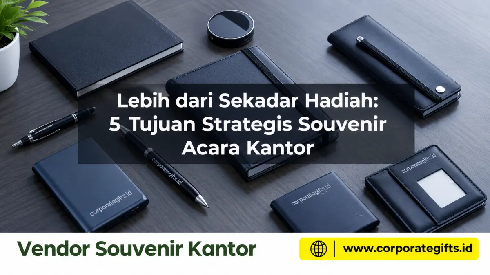

Corporate Gifts ID - Souvenir acara kantor memiliki lima tujuan strategis esensial: meningkatkan moral dan retensi karyawan, menjadi media branding hemat biaya jangka panjang, mempererat hubungan bisnis dengan klien, membangun budaya kerja internal yang solid, serta memicu promosi organik lewat percakapan sehari-hari. Bukan sekadar checklist pelengkap seremonial, souvenir yang direncanakan secara terstruktur mampu memberikan return on investment (ROI) nyata bagi reputasi dan keberlanjutan bisnis perusahaan.
Banyak pengambil kebijakan divisi HR maupun tim procurement masih memandang pengadaan cinderamata sebagai pos pengeluaran pasif. Padahal, sentuhan personal pada cinderamata fisik berkualitas tinggi mampu menjembatani hubungan emosional yang tidak dapat dicapai hanya lewat surat elektronik atau pertemuan formal. Temukan berbagai opsi paket cinderamata siap custom di katalog resmi Corporate Gifts ID.
Poin Kunci Tujuan Souvenir Acara Kantor:
- Pergeseran Paradigma: Souvenir bukan beban biaya checklist, melainkan aset pemasaran fisik berumur pakai panjang.
- Dampak Dualitas: Berfungsi ganda untuk mempererat kekompakan internal staf sekaligus mengunci loyalitas klien strategis eksternal.
- Efisiensi Anggaran: Menghasilkan cost per impression (CPI) yang jauh lebih hemat dibandingkan biaya penayangan iklan berbayar.
- Ekuitas Emosional: Memanusiakan transaksi bisnis melalui sentuhan hadiah personal yang dirancang dengan perhatian mendalam.
Mengapa Souvenir Acara Kantor adalah Investasi Strategis, Bukan Sekadar Biaya?
Dalam praktik manajemen modern, setiap rupiah yang dikeluarkan perusahaan dituntut untuk memberikan timbal balik yang dapat diukur. Pengadaan souvenir kantor memenuhi kriteria ini ketika diformulasikan untuk menjawab tantangan retensi kemitraan dan kepuasan kerja tim. Berbeda dengan cinderamata murah yang cepat rusak dan berakhir di tempat sampah, suvenir fungsional bermutu tinggi menjadi representasi kredibilitas institusi di mata stakeholder.
Berdasarkan studi industri corporate gifting, klien dan karyawan yang menerima bingkisan berkualitas tinggi merasakan ikatan psikologis kepemilikan yang jauh lebih kokoh terhadap perusahaan penyelenggara acara.
5 Tujuan Strategis Souvenir Acara Kantor untuk Perusahaan
Berikut adalah elaborasi komprehensif mengenai lima tujuan strategis utama di balik pengadaan cinderamata acara perusahaan:
1. Meningkatkan Moral dan Motivasi Karyawan
Souvenir adalah bentuk apresiasi konkret dan nyata bagi seluruh jajaran staf. Menerima bingkisan berdesain eksklusif memicu perasaan dihargai atas dedikasi kerja keras yang telah dikerahkan. Perasaan dihargai ini berkorelasi langsung dengan lonjakan kepuasan kerja, keterlibatan aktif (employee engagement), serta penurunan tingkat pergantian karyawan (turnover).
Contoh Penerapan: Membagikan jaket hoodie katun premium bersulam logo saat tim berhasil menuntaskan proyek strategis, atau mendistribusikan wellness gift set pada penutupan target kuartal yang padat sebagai wujud kepedulian terhadap kesehatan mental karyawan.
2. Media Branding dan Promosi dengan Biaya Efektif
Cinderamata fungsional bertindak layaknya papan reklame berjalan yang hadir di ruang aktivitas penerima setiap hari. Sebagai gambaran, tumbler dengan logo perusahaan yang digunakan di meja kantor selama setahun kerja (rata-rata 250 hari kerja) menghasilkan biaya per impresi visual (cost per impression) yang jauh lebih hemat dibandingkan tarif kampanye iklan digital berbayar.
3. Memperkuat dan Memanusiakan Hubungan Bisnis
Di era komunikasi serba otomatis dan rapat virtual yang sering kali terasa dingin, sentuhan cinderamata fisik bermutu tinggi menjadi pembeda utama. Memberikan souvenir premium kepada klien pasca penandatanganan nota kesepahaman (MoU) atau perayaan hari jadi kerja sama menunjukkan komitmen jangka panjang yang melampaui batas transaksi formal.
Hadiah yang dipersiapkan dengan teliti menciptakan ekuitas emosional (emotional equity) yang membuat mitra enggan berpaling ke kompetitor.

Penggunaan welcome kit dan apparel seragam kantor dalam membangun identitas korporat yang harmonis dan profesional.
4. Membangun Budaya dan Identitas Perusahaan
Souvenir memegang peranan sentral dalam menanamkan nilai-nilai budaya korporat sejak awal. Paket welcome kit onboarding berisi binder agenda kerja, pulpen logam, tumbler stainless, dan lanyard beridentitas resmi yang diberikan pada hari pertama kerja membuat talenta baru merasa disambut hangat sebagai bagian dari keluarga besar institusi.
Demikian pula saat acara gathering tahunan, mengenakan pakaian custom bernada sama menyatukan persepsi dan membangkitkan rasa bangga kolektif (corporate pride).
5. Memicu Percakapan dan Promosi Organik (Word-of-Mouth)
Cinderamata inovatif dan estetik secara alami memancing rasa ingin tahu. Saat seorang profesional menggunakan wireless charger pad berdesain minimalis atau smart notebook di ruang coworking, rekan di sekelilingnya kerap kali menanyakan asal produk tersebut. Momen percakapan organik ini menjadi sarana advokasi merek tanpa paksaan yang sangat bernilai tinggi bagi eksposur perusahaan Anda.
Tabel Analisis 5 Tujuan Strategis & Rekomendasi Souvenir Kantor
Gunakan matriks perbandingan di bawah ini untuk menyelaraskan sasaran acara kantor Anda dengan pilihan kategori produk yang paling tepat sasaran:
| Tujuan Strategis | Rekomendasi Produk Souvenir | Target Audiens | Indikator Dampak (KPI) |
|---|---|---|---|
| Moral & Motivasi Karyawan | Hoodie katun tebal bordir, employee wellness gift box, tumbler grafir nama. | Karyawan internal, tim penuntas proyek, staf teladan tahunan. | Kenaikan skor eNPS, kepuasan kerja internal, loyalitas masa kerja tim. |
| Media Branding Efektif | Vacuum tumbler SUS304, payung lipat anti-UV, notebook agenda kerja. | Peserta seminar massal, audiens pameran industri (expo). | Biaya per impresi (CPI) rendah, daya tahan masa pakai barang berbulan-bulan. |
| Penguat Relasi Klien | Executive pen set kuningan, gift set powerbank kulit, plakat kristal. | Klien VIP, pemegang saham, partner penandatanganan kontrak MoU. | Tingkat perpanjangan kontrak (retention rate), kepercayaan kemitraan B2B. |
| Budaya & Identitas Kantor | Onboarding welcome kit, tali lanyard tissue, kaos polo katun pique. | Karyawan baru (onboarding), peserta family gathering kantor. | Kesatuan visual tim, rasa memiliki (sense of belonging) yang tinggi. |
| Pemicu Promosi Organik | Wireless charger meja unik, mini Bluetooth speaker, smart desk pad. | Mitra kerja modern, profesional muda, tamu pimpinan. | Eksposur rekomendasi mulut ke mulut, unggahan sukarela di media sosial. |
Tips Implementasi Pengadaan Souvenir Acara Kantor Berdampak Tinggi
Agar kelima sasaran strategis di atas tercapai secara maksimal tanpa membebani anggaran korporat, perhatikan panduan praktis berikut:
- Prioritaskan Kegunaan Nyata (High Utility): Pilihlah produk yang memecahkan kebutuhan harian penerima di ruang kerja atau saat bepergian.
- Hindari Desain Logo Berlebihan: Personalisasi logo berukuran sedang dengan teknik ukir laser, deboss kulit, atau bordir warna senada jauh lebih disukai dibanding sablon warna mencolok.
- Evaluasi Dampak Pasca-Acara: Lakukan tracking kepuasan menggunakan panduan mengukur efektivitas souvenir kantor premium untuk mengkaji feedback penerima secara objektif.
- Konsultasikan Bersama Vendor Resmi: Bekerjasamalah dengan vendor berpengalaman yang menyediakan legalitas Faktur Pajak PPN lengkap dan fasilitas sampel mockup 3D gratis sebelum masuk jalur produksi.
Pertanyaan Seputar Souvenir Acara Kantor (FAQ)
Kesimpulan & Rekomendasi Pengadaan
Souvenir acara kantor bukan sekadar hadiah seremonial penutup acara, melainkan jembatan emosional strategis yang mengubah hubungan bisnis transaksional menjadi relasi jangka panjang yang penuh loyalitas. Dengan mengarahkan pengadaan souvenir pada lima tujuan strategis di atas, setiap rupiah investasi korporat Anda akan bekerja efektif dalam memperkokoh reputasi institusi.
Pelajari panduan pengadaan komprehensif lainnya pada panduan lengkap souvenir acara kantor kami atau konsultasikan pengadaan custom bersama tim spesialis CorporateGifts.ID.